tna — R Package Documentation
v1.1.0 — Transition Network Analysis
Source:vignettes/articles/new-docs.Rmd
new-docs.Rmdtna provides tools for performing Transition Network Analysis (TNA) to study relational dynamics. Build Markov models from sequence data, compute centrality measures, detect communities and cliques, and validate findings with bootstrapping and permutation tests.
Install:
install.packages("tna")
# or dev version:
devtools::install_github("sonsoleslp/tna")Requires R >= 4.1.0. All analysis objects have
print(), summary(), and plot()
methods.
Building Models
build_model()
Construct a transition network analysis model from sequence data.
Requires specifying type. For convenience, use the shortcut
functions: tna() = relative, ftna() =
frequency, ctna() = co-occurrence, atna() =
attention.
build_model(x, type = "relative", scaling = character(0L), cols = everything(),
params = list(), inits, begin_state, end_state)| Parameter | Description | Default |
|---|---|---|
x |
data.frame (wide), stslist,
matrix, or tna_data
|
— |
type |
"relative", "frequency",
"co-occurrence", "n-gram", "gap",
"window", "reverse",
"attention"
|
"relative" |
scaling |
"minmax", "max", "rank", or
empty vector |
character(0) |
params |
List: n_gram, max_gap,
window_size, weighted, direction,
decay, lambda, time,
duration
|
list() |
Returns: A tna object with
$weights, $inits, $labels,
$data.
# Using build_model with explicit type
model <- build_model(group_regulation, type = "relative")
# Shortcut functions (preferred)
model <- tna(group_regulation) # type = "relative"
model_f <- ftna(group_regulation) # type = "frequency"
model_c <- ctna(group_regulation) # type = "co-occurrence"
model_a <- atna(group_regulation) # type = "attention"
print(model)#> State Labels :
#>
#> adapt, cohesion, consensus, coregulate, discuss, emotion, monitor, plan, synthesis
#>
#> Transition Probability Matrix :
#>
#> adapt cohesion consensus coregulate discuss emotion
#> adapt 0.0000000000 0.27308448 0.47740668 0.02161100 0.05893910 0.11984283
#> cohesion 0.0029498525 0.02713864 0.49793510 0.11917404 0.05958702 0.11563422
#> consensus 0.0047400853 0.01485227 0.08200348 0.18770738 0.18802338 0.07268131
#> coregulate 0.0162436548 0.03604061 0.13451777 0.02335025 0.27360406 0.17208122
#> discuss 0.0713743356 0.04758289 0.32118451 0.08428246 0.19488737 0.10579600
#> emotion 0.0024673951 0.32534367 0.32040888 0.03419105 0.10186817 0.07684173
#> monitor 0.0111653873 0.05582694 0.15910677 0.05792045 0.37543615 0.09071877
#> plan 0.0009745006 0.02517460 0.29040117 0.01721618 0.06789021 0.14682475
#> synthesis 0.2346625767 0.03374233 0.46625767 0.04447853 0.06288344 0.07055215
#> monitor plan synthesis
#> adapt 0.03339882 0.01571709 0.000000000
#> cohesion 0.03303835 0.14100295 0.003539823
#> consensus 0.04661084 0.39579712 0.007584137
#> coregulate 0.08629442 0.23908629 0.018781726
#> discuss 0.02227284 0.01164262 0.140976968
#> emotion 0.03630596 0.09975326 0.002819880
#> monitor 0.01814375 0.21563154 0.016050244
#> plan 0.07552379 0.37420822 0.001786584
#> synthesis 0.01226994 0.07515337 0.000000000
#>
#> Initial Probabilities :
#>
#> adapt cohesion consensus coregulate discuss emotion monitor
#> 0.0115 0.0605 0.2140 0.0190 0.1755 0.1515 0.1440
#> plan synthesis
#> 0.2045 0.0195
summary(model)#> # A tibble: 13 × 2
#> metric value
#> * <chr> <dbl>
#> 1 Node Count 9 e+ 0
#> 2 Edge Count 7.8 e+ 1
#> 3 Network Density 1 e+ 0
#> 4 Mean Distance 4.72e- 2
#> 5 Mean Out-Strength 1 e+ 0
#> 6 SD Out-Strength 8.07e- 1
#> 7 Mean In-Strength 1 e+ 0
#> 8 SD In-Strength 6.80e-17
#> 9 Mean Out-Degree 8.67e+ 0
#> 10 SD Out-Degree 7.07e- 1
#> 11 Centralization (Out-Degree) 1.56e- 2
#> 12 Centralization (In-Degree) 1.56e- 2
#> 13 Reciprocity 9.86e- 1Model types
| Type | Description |
|---|---|
"relative" |
Transition probabilities (rows sum to 1). Default |
"frequency" |
Raw transition counts |
"co-occurrence" |
Co-occurrence within sequences |
"n-gram" |
Higher-order transitions |
"gap" |
Non-adjacent transitions, weighted by gap |
"window" |
Transitions within sliding window |
"reverse" |
Reverse order (reply networks) |
"attention" |
Exponential decay-weighted downstream pairs |
group_model() / group_tna()
Build a TNA model for each group. Accepts manual group assignments,
mhmm objects, or tna_clustering results. Most
tna functions accept group_tna directly — no need to
specify groups again.
group_model(x, group, type = "relative", scaling = character(0L),
groupwise = FALSE, cols = everything(), params = list(), na.rm = TRUE, ...)
# From mixture Markov model
mmm_model <- group_model(engagement_mmm)
print(mmm_model)#> Cluster 1 :
#> State Labels :
#>
#> Active, Average, Disengaged
#>
#> Transition Probability Matrix :
#>
#> Active Average Disengaged
#> Active 0.85985688 0.08919748 0.05094565
#> Average 0.31210322 0.54208478 0.14581200
#> Disengaged 0.04791061 0.16179397 0.79029542
#>
#> Initial Probabilities :
#>
#> Active Average Disengaged
#> 0.3397762 0.3234995 0.3367243
#>
#> Cluster 2 :
#> State Labels :
#>
#> Active, Average, Disengaged
#>
#> Transition Probability Matrix :
#>
#> Active Average Disengaged
#> Active 0.84090909 0.1590909 0.0000000
#> Average 0.09259259 0.6296296 0.2777778
#> Disengaged 0.15555556 0.5111111 0.3333333
#>
#> Initial Probabilities :
#>
#> Active Average Disengaged
#> 0.75000000 0.08333333 0.16666667
#>
#> Cluster 3 :
#> State Labels :
#>
#> Active, Average, Disengaged
#>
#> Transition Probability Matrix :
#>
#> Active Average Disengaged
#> Active 0.5833333 0.1250000 0.29166667
#> Average 0.1527778 0.8194444 0.02777778
#> Disengaged 0.0000000 0.6000000 0.40000000
#>
#> Initial Probabilities :
#>
#> Active Average Disengaged
#> 0 0 1
summary(mmm_model)#> # A tibble: 13 × 4
#> metric `Cluster 1` `Cluster 2` `Cluster 3`
#> * <chr> <dbl> <dbl> <dbl>
#> 1 Node Count 3 3 3
#> 2 Edge Count 9 8 8
#> 3 Network Density 1 1 1
#> 4 Mean Distance 0.111 0.239 0.302
#> 5 Mean Out-Strength 1 1 1
#> 6 SD Out-Strength 0.214 0.353 0.472
#> 7 Mean In-Strength 1 1 1
#> 8 SD In-Strength 0 0 0
#> 9 Mean Out-Degree 3 2.67 2.67
#> 10 SD Out-Degree 0 0.577 0.577
#> 11 Centralization (Out-Degree) 0 0.25 0.25
#> 12 Centralization (In-Degree) 0 0.25 0.25
#> 13 Reciprocity 1 0.8 0.8
# Manual groups
group <- c(rep("High", 1000), rep("Low", 1000))
gmodel <- group_model(group_regulation, group = group)Plotting
All TNA analysis objects have plot() methods returning
cograph_network or ggplot2 objects.
plot()
Plot a TNA model as a transition network.
plot(x, labels, colors, pie, cut, show_pruned = TRUE, pruned_edge_color = "pink",
edge.color = NA, edge.labels = TRUE, edge.label.position = 0.65,
layout = "circle", layout_args = list(), scale_nodes, scaling_factor = 0.5,
mar = rep(5, 4), theme = "colorblind", ...)
plot(model)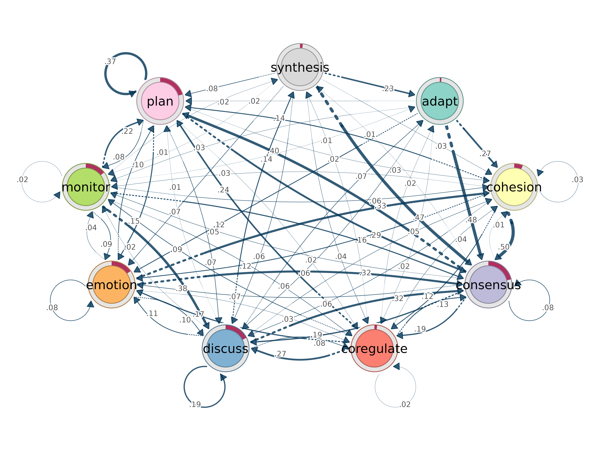
plot(model, layout = "spring", scale_nodes = "OutStrength")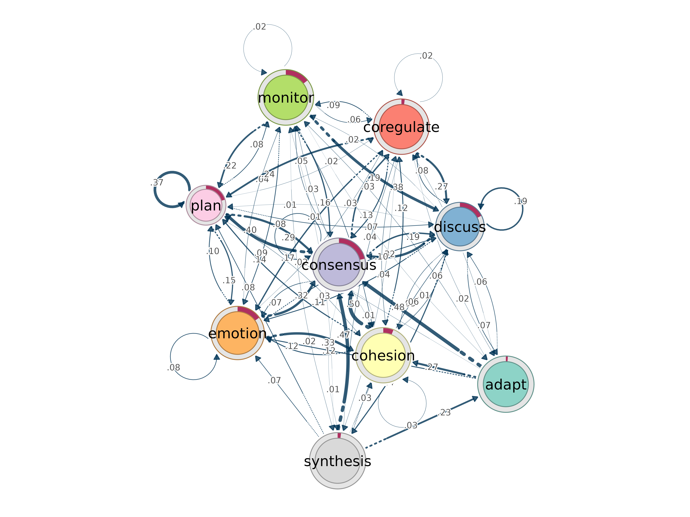
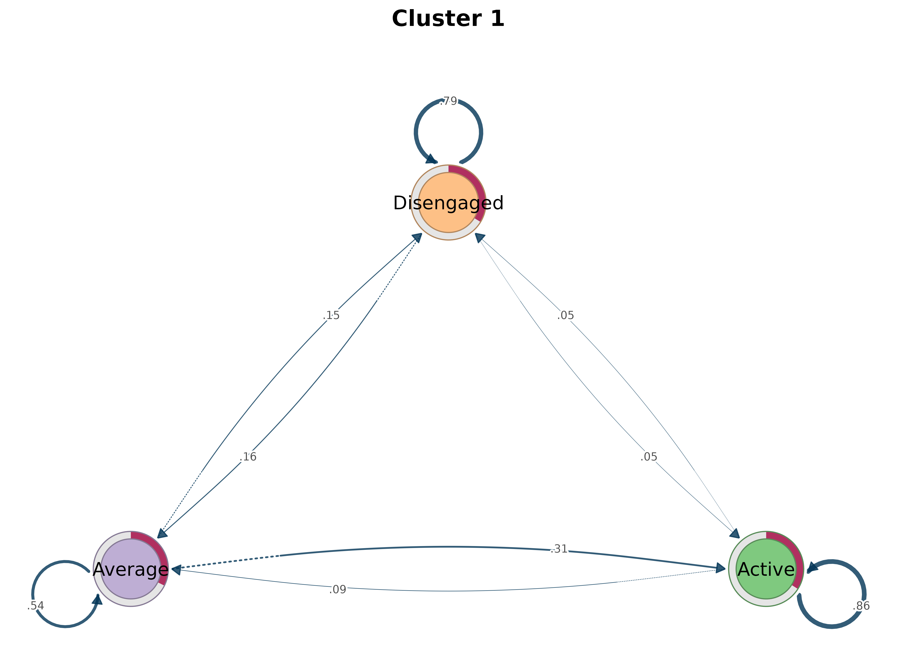
plot_frequencies()
Bar plot of state frequency distribution.
plot_frequencies(model)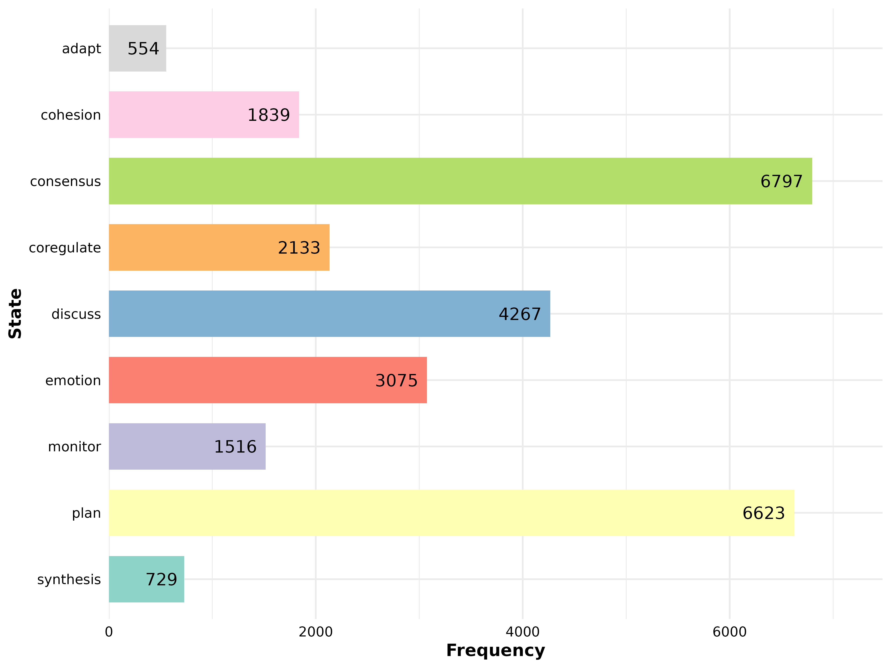
# Group comparison
plot_frequencies(gmodel)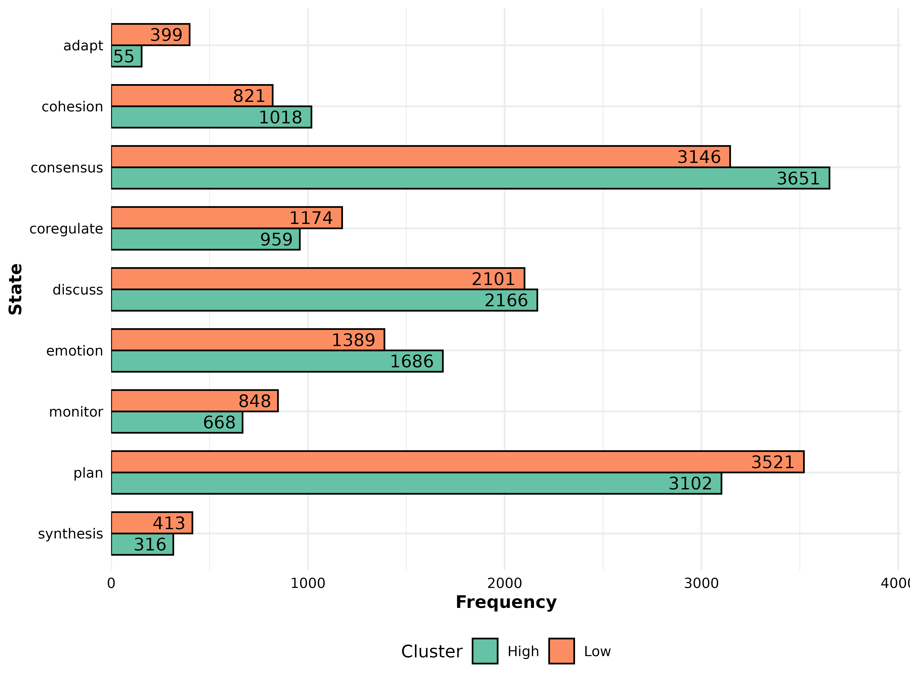
plot_mosaic()
Mosaic plot with chi-square test results. Requires frequency model
(ftna()).
plot_mosaic(model_f)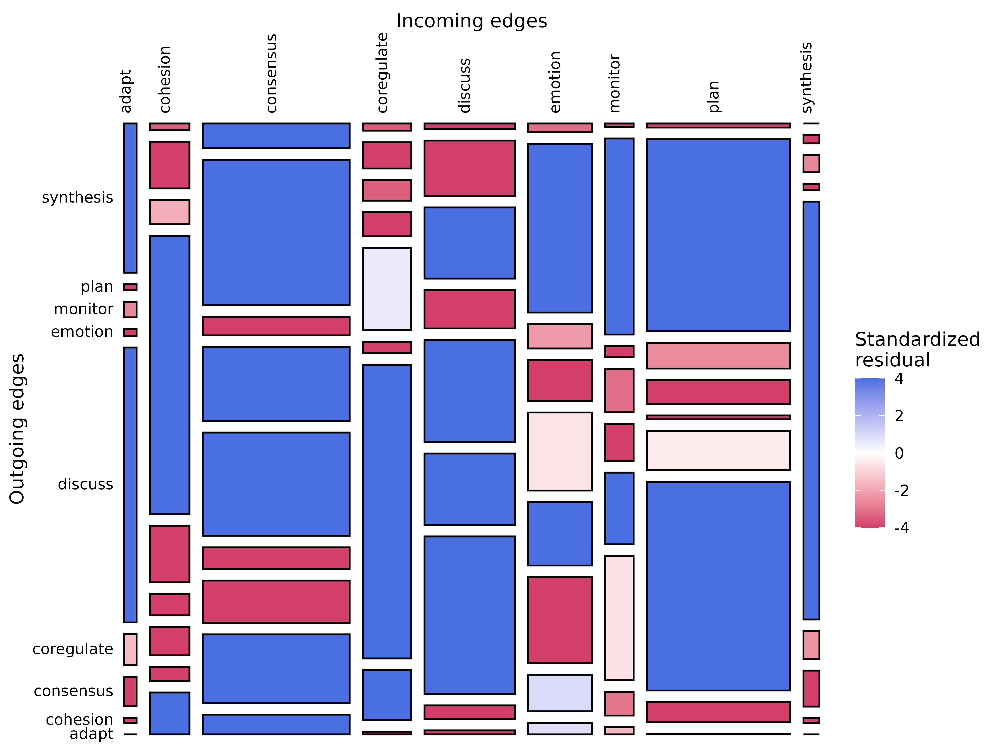
plot_sequences()
Sequence index plots or state distribution plots.
plot_sequences(x, cols = everything(), group, type = "index", scale = "proportion",
geom = "bar", include_na = FALSE, colors, na_color = "white",
sort_by, show_n = TRUE, border, title, legend_title, xlab, ylab,
tick = 5, ncol = 2L, ...)
plot_sequences(group_regulation)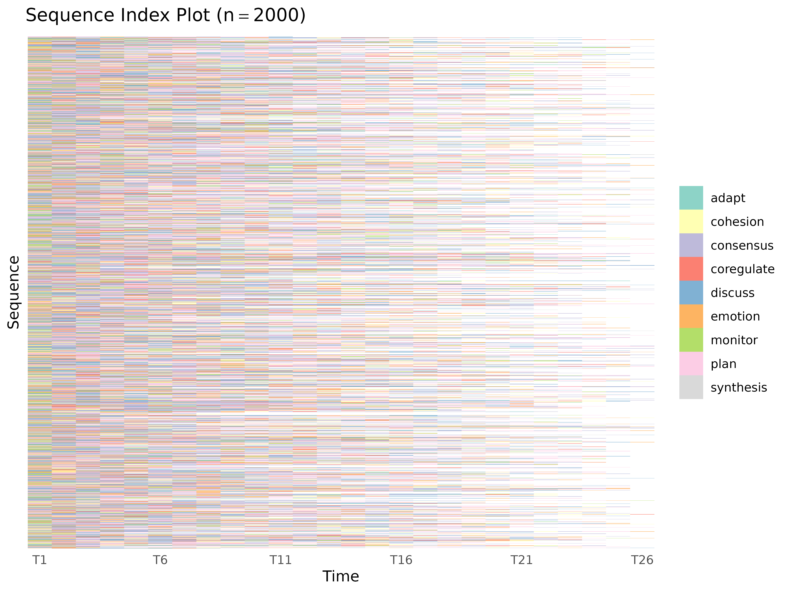
plot_sequences(group_regulation, type = "distribution")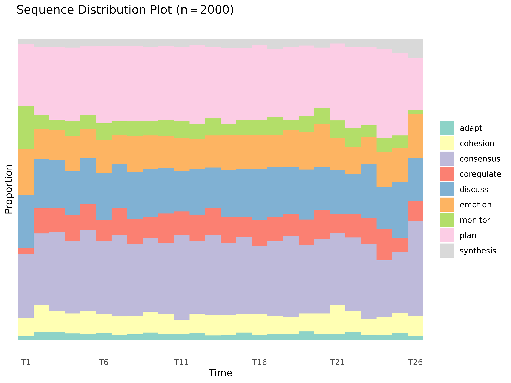
# Group comparison — pass group_tna directly
plot_sequences(gmodel)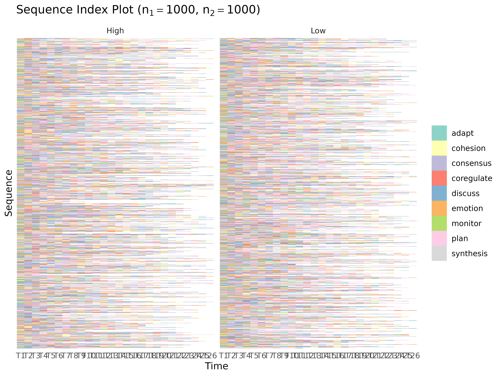
plot_compare()
Difference network between groups. Just pass the group model object.
plot_compare(gmodel)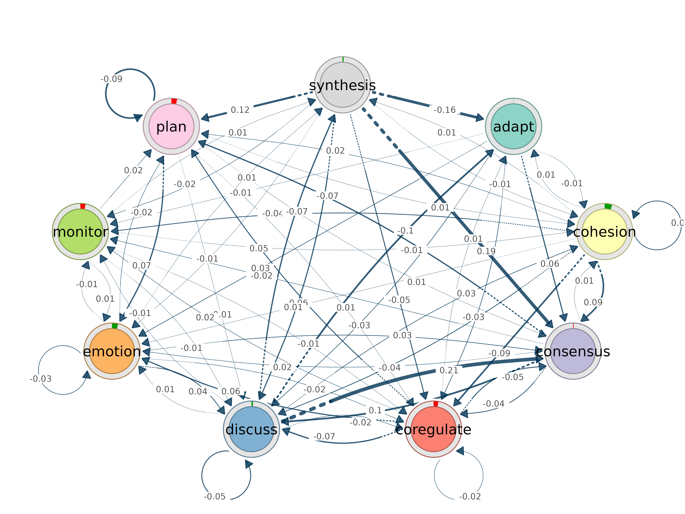
Difference network between two models. Green = x greater, red = y greater.
model_a <- tna(group_regulation[1:1000, ])
model_b <- tna(group_regulation[1001:2000, ])
plot_compare(model_a, model_b)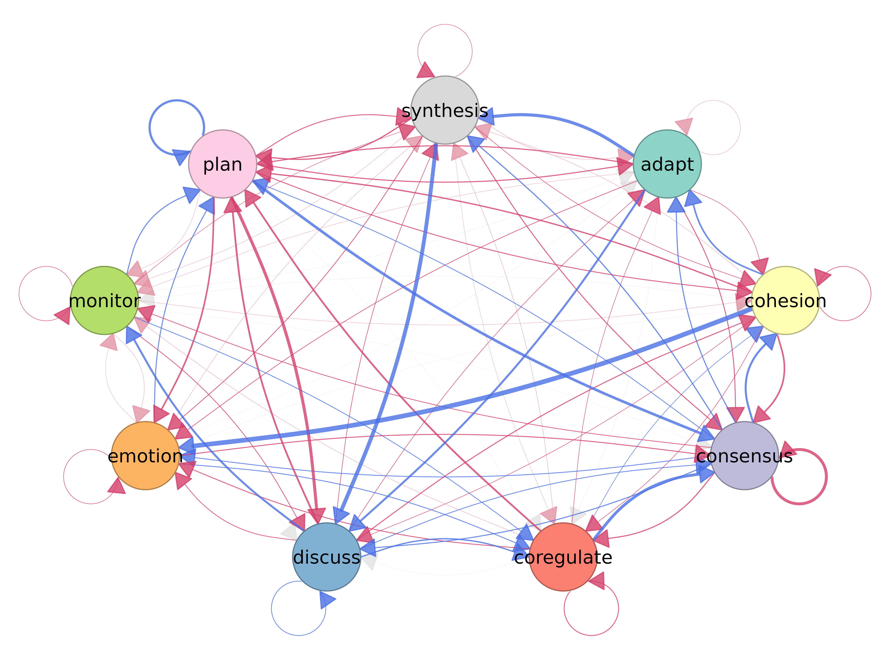
plot_associations()
Association network. Requires frequency model
(ftna()).
plot_associations(model_f)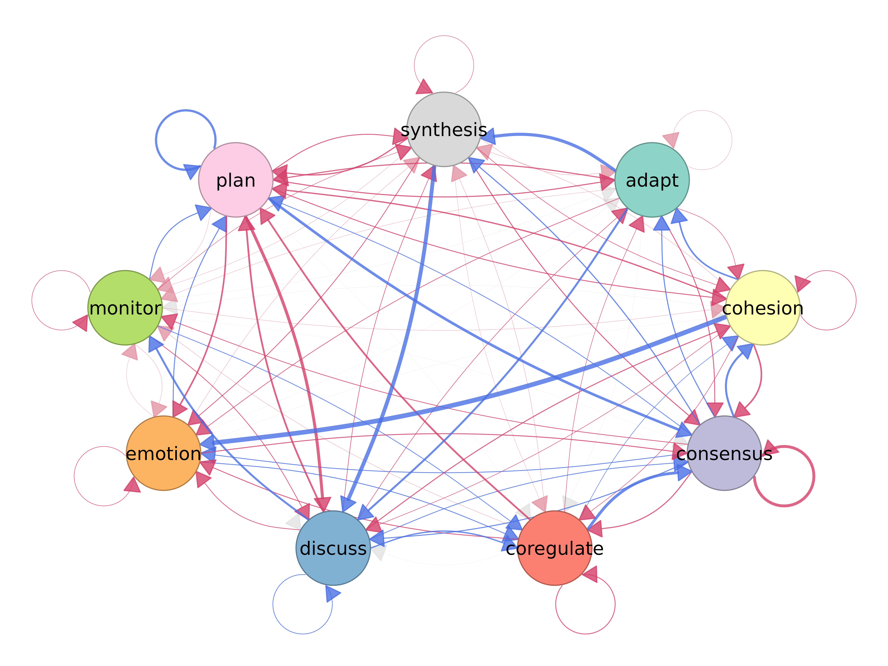
hist()
hist(model)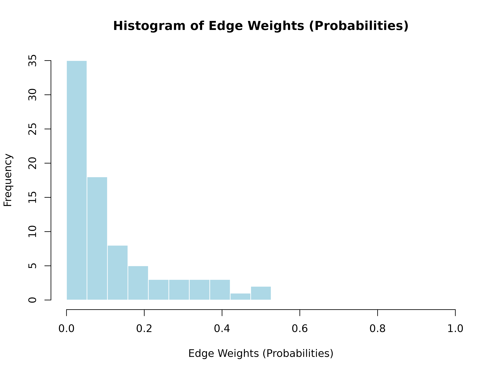
Additional plot methods
| Object | plot() produces |
|---|---|
tna_centralities |
Lollipop charts by measure |
tna_communities |
Network colored by community |
tna_cliques |
Individual clique subnetworks |
tna_bootstrap |
Significant edges only |
tna_permutation |
Significant edge differences |
tna_stability |
Stability curves with CS-coefficients |
tna_comparison |
Heatmap or difference viz |
tna_sequence_comparison |
Pattern comparison chart |
group_tna |
Side-by-side network plots |
Data Preparation
prepare_data()
Convert long-format event logs into wide-format sequences.
prepare_data(data, actor, time, action, order, time_threshold = 900,
custom_format = NULL, is_unix_time = FALSE,
unix_time_unit = "seconds", unused_fn = dplyr::first)
results <- prepare_data(
group_regulation_long,
actor = "Actor", time = "Time", action = "Action"
)
print(results$statistics)#> $total_sessions
#> [1] 2000
#>
#> $total_actions
#> [1] 27533
#>
#> $max_sequence_length
#> [1] 26
#>
#> $unique_users
#> [1] 2000
#>
#> $sessions_per_user
#> # A tibble: 2,000 × 2
#> Actor n_sessions
#> <int> <int>
#> 1 1 1
#> 2 2 1
#> 3 3 1
#> 4 4 1
#> 5 5 1
#> 6 6 1
#> 7 7 1
#> 8 8 1
#> 9 9 1
#> 10 10 1
#> # ℹ 1,990 more rows
#>
#> $actions_per_session
#> # A tibble: 2,000 × 2
#> .session_id n_actions
#> <chr> <int>
#> 1 1010 session1 26
#> 2 1015 session1 26
#> 3 1030 session1 26
#> 4 1092 session1 26
#> 5 1106 session1 26
#> 6 1107 session1 26
#> 7 1153 session1 26
#> 8 1184 session1 26
#> 9 1209 session1 26
#> 10 1267 session1 26
#> # ℹ 1,990 more rows
#>
#> $time_range
#> [1] "2025-01-01 08:01:16 UTC" "2025-01-01 13:03:20 UTC"
import_data()
Transform wide-format feature data into long-format sequence data.
import_data(data, cols, id_cols, window_size = 1, replace_zeros = TRUE)
import_onehot()
Import one-hot encoded data as co-occurrence network.
import_onehot(data, cols, window = 1L)
simulate()
Simulate sequence data from a TNA model (requires
type = "relative").
#> T1 T2 T3 T4 T5 T6 T7
#> 1 plan emotion consensus monitor consensus discuss synthesis
#> 2 monitor emotion plan plan emotion plan consensus
#> 3 plan plan plan discuss discuss cohesion coregulate
#> 4 monitor coregulate plan plan plan plan monitor
#> 5 cohesion consensus consensus plan plan monitor emotion
#> T8 T9 T10
#> 1 adapt plan plan
#> 2 discuss cohesion consensus
#> 3 plan consensus plan
#> 4 coregulate consensus plan
#> 5 consensus coregulate monitorCentrality Measures
centralities()
Calculate centrality measures. Works on tna,
group_tna, and matrix.
centralities(x, loops = FALSE, normalize = FALSE, measures)| Measure | Description |
|---|---|
OutStrength |
Total weight of outgoing edges |
InStrength |
Total weight of incoming edges |
ClosenessIn / ClosenessOut /
Closeness
|
Closeness centrality variants |
Betweenness |
Geodesic betweenness |
BetweennessRSP |
Randomized shortest paths betweenness |
Diffusion |
Diffusion centrality |
Clustering |
Signed clustering coefficient |
cm <- centralities(model)
print(cm)#> # A tibble: 9 × 10
#> state OutStrength InStrength ClosenessIn ClosenessOut Closeness Betweenness
#> * <fct> <dbl> <dbl> <dbl> <dbl> <dbl> <dbl>
#> 1 adapt 1 0.345 0.00834 0.0152 0.0248 1
#> 2 cohesion 0.973 0.812 0.0138 0.0124 0.0265 0
#> 3 consens… 0.918 2.67 0.0351 0.0125 0.0383 30
#> 4 coregul… 0.977 0.567 0.0155 0.0150 0.0210 0
#> 5 discuss 0.805 1.19 0.0196 0.0131 0.0271 16
#> 6 emotion 0.923 0.894 0.0141 0.0121 0.0231 5
#> 7 monitor 0.982 0.346 0.00758 0.0137 0.0193 0
#> 8 plan 0.626 1.19 0.0274 0.0115 0.0274 9
#> 9 synthes… 1 0.192 0.00997 0.0158 0.0243 7
#> # ℹ 3 more variables: BetweennessRSP <dbl>, Diffusion <dbl>, Clustering <dbl>
plot(cm, ncol = 3, reorder = TRUE)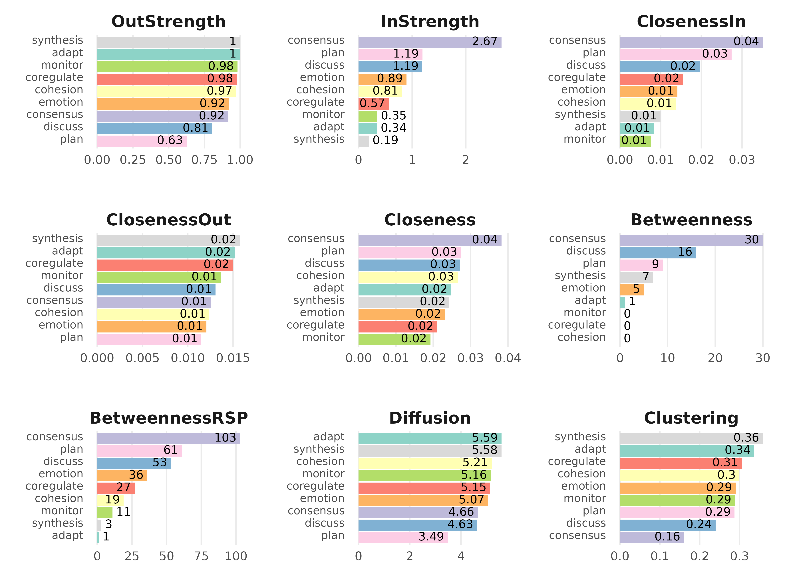
# On group_tna directly
centralities(gmodel)#> # A tibble: 18 × 11
#> group state OutStrength InStrength ClosenessIn ClosenessOut Closeness
#> * <chr> <fct> <dbl> <dbl> <dbl> <dbl> <dbl>
#> 1 High adapt 1 0.215 0.00650 0.0154 0.0263
#> 2 High cohesion 0.956 0.815 0.0142 0.0118 0.0279
#> 3 High consensus 0.917 2.95 0.0386 0.0121 0.0408
#> 4 High coregulate 0.987 0.436 0.0151 0.0139 0.0205
#> 5 High discuss 0.831 1.12 0.0224 0.0124 0.0309
#> 6 High emotion 0.937 1.00 0.0159 0.0115 0.0254
#> 7 High monitor 0.981 0.301 0.00768 0.0130 0.0209
#> 8 High plan 0.672 1.27 0.0282 0.0113 0.0283
#> 9 High synthesis 1 0.167 0.00878 0.0153 0.0273
#> 10 Low adapt 1 0.452 0.00948 0.0146 0.0242
#> 11 Low cohesion 0.993 0.799 0.0132 0.0123 0.0252
#> 12 Low consensus 0.920 2.42 0.0321 0.0119 0.0352
#> 13 Low coregulate 0.968 0.689 0.0160 0.0155 0.0218
#> 14 Low discuss 0.779 1.21 0.0158 0.0129 0.0223
#> 15 Low emotion 0.906 0.808 0.0128 0.0118 0.0209
#> 16 Low monitor 0.982 0.393 0.00743 0.0142 0.0183
#> 17 Low plan 0.585 1.15 0.0261 0.0109 0.0261
#> 18 Low synthesis 1 0.216 0.0101 0.0153 0.0233
#> # ℹ 4 more variables: Betweenness <dbl>, BetweennessRSP <dbl>, Diffusion <dbl>,
#> # Clustering <dbl>
betweenness_network()
Build network with edge betweenness as weights.
bn <- betweenness_network(model)
print(bn)#> State Labels :
#>
#> adapt, cohesion, consensus, coregulate, discuss, emotion, monitor, plan, synthesis
#>
#> Edge Betweenness Matrix :
#>
#> adapt cohesion consensus coregulate discuss emotion monitor plan
#> adapt 0 2 6 0 0 1 0 0
#> cohesion 0 0 7 0 0 1 0 0
#> consensus 0 0 0 8 15 0 0 15
#> coregulate 0 0 0 0 4 2 1 1
#> discuss 0 0 7 0 0 2 0 0
#> emotion 0 6 7 0 0 0 0 0
#> monitor 0 0 0 0 5 2 0 1
#> plan 0 0 5 0 0 5 7 0
#> synthesis 9 0 6 0 0 0 0 0
#> synthesis
#> adapt 0
#> cohesion 0
#> consensus 0
#> coregulate 0
#> discuss 15
#> emotion 0
#> monitor 0
#> plan 0
#> synthesis 0
#>
#> Initial Probabilities :
#>
#> adapt cohesion consensus coregulate discuss emotion monitor
#> 0.0115 0.0605 0.2140 0.0190 0.1755 0.1515 0.1440
#> plan synthesis
#> 0.2045 0.0195
estimate_cs()
Centrality stability via subset sampling.
estimate_cs(x, loops = FALSE, normalize = FALSE,
measures = c("InStrength", "OutStrength", "Betweenness"),
iter = 1000, method = "pearson",
drop_prop = seq(0.1, 0.9, by = 0.1),
threshold = 0.7, certainty = 0.95, progressbar = FALSE)
cs <- estimate_cs(model, measures = c("InStrength", "OutStrength"), iter = 100)
print(cs)#> Centrality Stability Coefficients
#>
#> InStrength OutStrength
#> 0.9 0.9
plot(cs)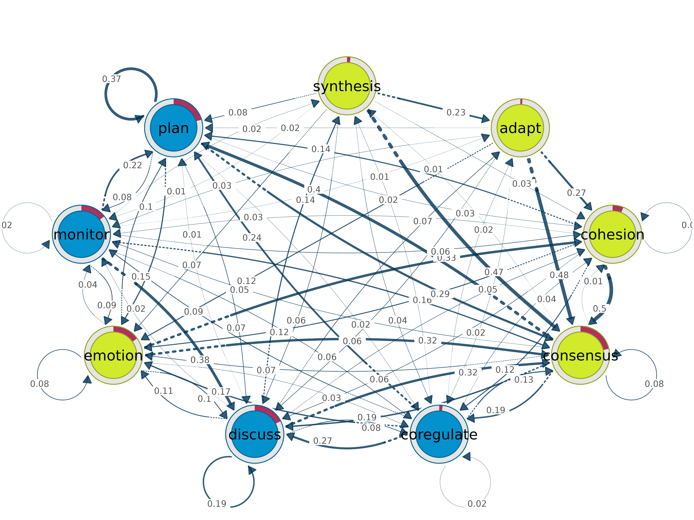
Network Structure
communities()
Detect communities using 7 igraph algorithms. Works on
tna and group_tna.
communities(x, methods, gamma = 1)
comm <- communities(model)
print(comm)#> Number of communities found by each algorithm
#>
#> walktrap fast_greedy label_prop infomap
#> 1 3 1 1
#> edge_betweenness leading_eigen spinglass
#> 1 3 2
#>
#> Community assignments
#>
#> state walktrap fast_greedy label_prop infomap edge_betweenness
#> 1 adapt 1 1 1 1 1
#> 2 cohesion 1 1 1 1 1
#> 3 consensus 1 1 1 1 1
#> 4 coregulate 1 2 1 1 1
#> 5 discuss 1 2 1 1 1
#> 6 emotion 1 1 1 1 1
#> 7 monitor 1 2 1 1 1
#> 8 plan 1 3 1 1 1
#> 9 synthesis 1 1 1 1 1
#> leading_eigen spinglass
#> 1 1 1
#> 2 1 1
#> 3 2 1
#> 4 3 2
#> 5 3 2
#> 6 1 1
#> 7 2 2
#> 8 2 2
#> 9 3 1
plot(comm, method = "spinglass")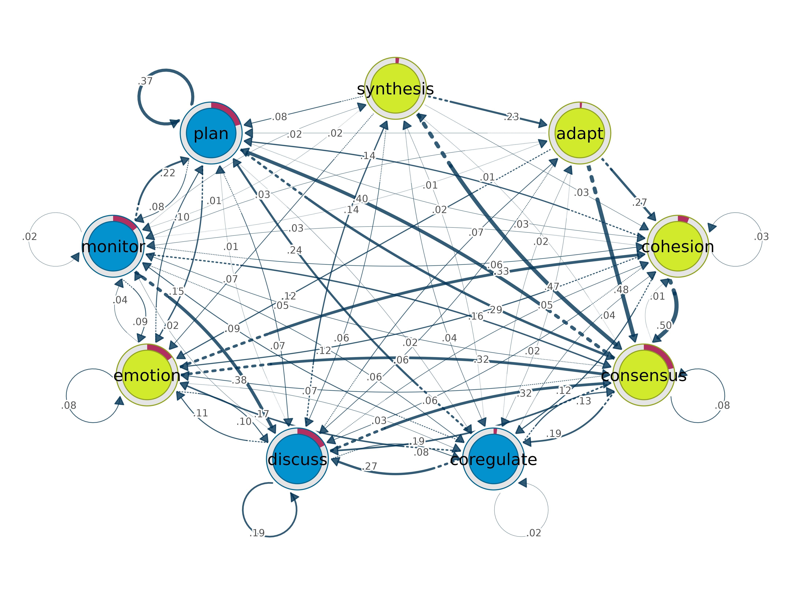
# On group_tna directly
communities(gmodel)#> High :
#> Number of communities found by each algorithm
#>
#> walktrap fast_greedy label_prop infomap
#> 2 3 1 1
#> edge_betweenness leading_eigen spinglass
#> 7 2 2
#>
#> Community assignments
#>
#> state walktrap fast_greedy label_prop infomap edge_betweenness
#> 1 adapt 1 1 1 1 1
#> 2 cohesion 1 1 1 1 2
#> 3 consensus 1 1 1 1 1
#> 4 coregulate 2 2 1 1 3
#> 5 discuss 2 2 1 1 4
#> 6 emotion 1 1 1 1 5
#> 7 monitor 2 2 1 1 6
#> 8 plan 2 3 1 1 7
#> 9 synthesis 1 1 1 1 1
#> leading_eigen spinglass
#> 1 1 2
#> 2 1 2
#> 3 1 2
#> 4 2 1
#> 5 1 1
#> 6 1 2
#> 7 2 1
#> 8 2 1
#> 9 1 2
#>
#> Low :
#> Number of communities found by each algorithm
#>
#> walktrap fast_greedy label_prop infomap
#> 1 3 1 1
#> edge_betweenness leading_eigen spinglass
#> 3 4 3
#>
#> Community assignments
#>
#> state walktrap fast_greedy label_prop infomap edge_betweenness
#> 1 adapt 1 1 1 1 1
#> 2 cohesion 1 3 1 1 1
#> 3 consensus 1 1 1 1 1
#> 4 coregulate 1 2 1 1 1
#> 5 discuss 1 2 1 1 2
#> 6 emotion 1 3 1 1 1
#> 7 monitor 1 2 1 1 3
#> 8 plan 1 1 1 1 3
#> 9 synthesis 1 1 1 1 1
#> leading_eigen spinglass
#> 1 1 2
#> 2 1 1
#> 3 2 1
#> 4 3 3
#> 5 3 3
#> 6 4 1
#> 7 3 3
#> 8 2 1
#> 9 1 2
cliques()
Identify cliques (complete subgraphs) of a given size.
cliques(x, size = 2, threshold = 0, sum_weights = FALSE, ...)#> Number of 2-cliques = 35 (weight threshold = 0)
#> Showing 6 cliques starting from clique number 1
#>
#> Clique 1
#> monitor plan
#> monitor 0.01814375 0.2156315
#> plan 0.07552379 0.3742082
#>
#> Clique 2
#> emotion monitor
#> emotion 0.07684173 0.03630596
#> monitor 0.09071877 0.01814375
#>
#> Clique 3
#> emotion plan
#> emotion 0.07684173 0.09975326
#> plan 0.14682475 0.37420822
#>
#> Clique 4
#> discuss emotion
#> discuss 0.1948874 0.10579600
#> emotion 0.1018682 0.07684173
#>
#> Clique 5
#> discuss monitor
#> discuss 0.1948874 0.02227284
#> monitor 0.3754361 0.01814375
#>
#> Clique 6
#> discuss plan
#> discuss 0.19488737 0.01164262
#> plan 0.06789021 0.37420822
plot(cliq, n = 3, ask = FALSE)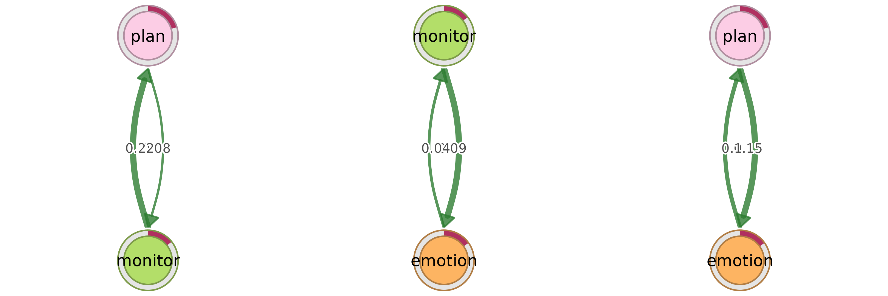
Comparison
compare()
Compare two TNA models with comprehensive metrics.
#> Edge difference metrics
#> # A tibble: 81 × 16
#> source target weight_x weight_y raw_difference absolute_difference
#> <fct> <fct> <dbl> <dbl> <dbl> <dbl>
#> 1 adapt adapt 0 0 0 0
#> 2 cohesion adapt 0.00533 0 0.00533 0.00533
#> 3 consensus adapt 0.00413 0.00545 -0.00132 0.00132
#> 4 coregulate adapt 0.0224 0.0112 0.0112 0.0112
#> 5 discuss adapt 0.0240 0.120 -0.0962 0.0962
#> 6 emotion adapt 0.00323 0.00155 0.00167 0.00167
#> 7 monitor adapt 0.0111 0.0112 -0.000192 0.000192
#> 8 plan adapt 0.00138 0.000613 0.000771 0.000771
#> 9 synthesis adapt 0.144 0.302 -0.158 0.158
#> 10 adapt cohesion 0.262 0.277 -0.0148 0.0148
#> # ℹ 71 more rows
#> # ℹ 10 more variables: squared_difference <dbl>, relative_difference <dbl>,
#> # similarity_strength_index <dbl>, difference_index <dbl>,
#> # rank_difference <dbl>, percentile_difference <dbl>,
#> # logarithmic_ratio <dbl>, standardized_weight_x <dbl>,
#> # standardized_weight_y <dbl>, standardized_score_inflation <dbl>
#>
#> Summary metrics of differences
#> # A tibble: 22 × 3
#> category metric value
#> <chr> <chr> <dbl>
#> 1 Weight Deviations Mean Abs. Diff. 0.0322
#> 2 Weight Deviations Median Abs. Diff. 0.0181
#> 3 Weight Deviations RMS Diff. 0.0522
#> 4 Weight Deviations Max Abs. Diff. 0.210
#> 5 Weight Deviations Rel. Mean Abs. Diff. 0.290
#> 6 Weight Deviations CV Ratio 1.10
#> 7 Correlations Pearson 0.921
#> 8 Correlations Spearman 0.915
#> 9 Correlations Kendall 0.767
#> 10 Correlations Distance 0.838
#> # ℹ 12 more rows
#>
#> Network metrics
#> # A tibble: 13 × 3
#> metric x y
#> <chr> <dbl> <dbl>
#> 1 Node Count 9 e+ 0 9 e+ 0
#> 2 Edge Count 7.6 e+ 1 7.5 e+ 1
#> 3 Network Density 1 e+ 0 1 e+ 0
#> 4 Mean Distance 4.23e- 2 5.60e- 2
#> 5 Mean Out-Strength 1 e+ 0 1 e+ 0
#> 6 SD Out-Strength 9.14e- 1 7.19e- 1
#> 7 Mean In-Strength 1 e+ 0 1 e+ 0
#> 8 SD In-Strength 7.85e-17 3.93e-17
#> 9 Mean Out-Degree 8.44e+ 0 8.33e+ 0
#> 10 SD Out-Degree 1.13e+ 0 8.66e- 1
#> 11 Centralization (Out-Degree) 4.69e- 2 6.25e- 2
#> 12 Centralization (In-Degree) 4.69e- 2 6.25e- 2
#> 13 Reciprocity 9.57e- 1 9.41e- 1
plot(comp)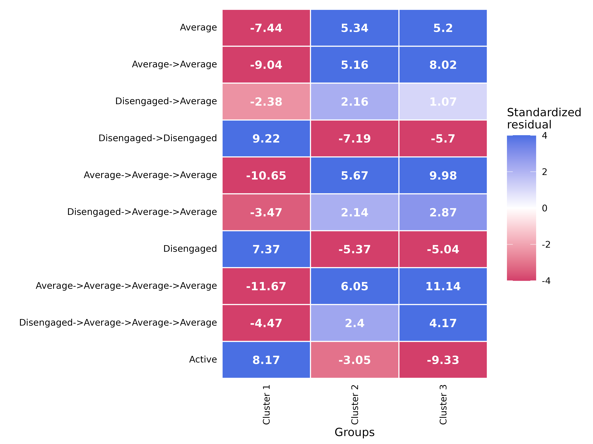
compare_sequences()
Compare subsequence patterns between groups. Pass
group_tna directly.
# For group_tna (groups already defined)
compare_sequences(x, sub, min_freq = 5L, correction = "bonferroni", ...)
comp_seq <- compare_sequences(gmodel)
print(head(comp_seq, 10))#> pattern freq_High freq_Low prop_High prop_Low effect_size
#> 1 adapt 155 399 0.011296553 0.028887924 16.476066
#> 2 cohesion 1018 821 0.074192843 0.059441066 7.135478
#> 3 consensus 3651 3146 0.266088478 0.227772951 14.333771
#> 4 coregulate 959 1174 0.069892865 0.084998552 6.781559
#> 5 emotion 1686 1389 0.122877341 0.100564726 9.109850
#> 6 monitor 668 848 0.048684498 0.061395888 6.804318
#> 7 plan 3102 3521 0.226076817 0.254923255 6.307583
#> 8 synthesis 316 413 0.023030391 0.029901535 4.689000
#> 9 adapt->cohesion 37 102 0.002908576 0.007961286 8.232879
#> 10 adapt->consensus 73 170 0.005738543 0.013268810 9.106178
#> p_value
#> 1 0.008991009
#> 2 0.008991009
#> 3 0.008991009
#> 4 0.008991009
#> 5 0.008991009
#> 6 0.008991009
#> 7 0.008991009
#> 8 0.008991009
#> 9 0.077922078
#> 10 0.077922078
plot(comp_seq)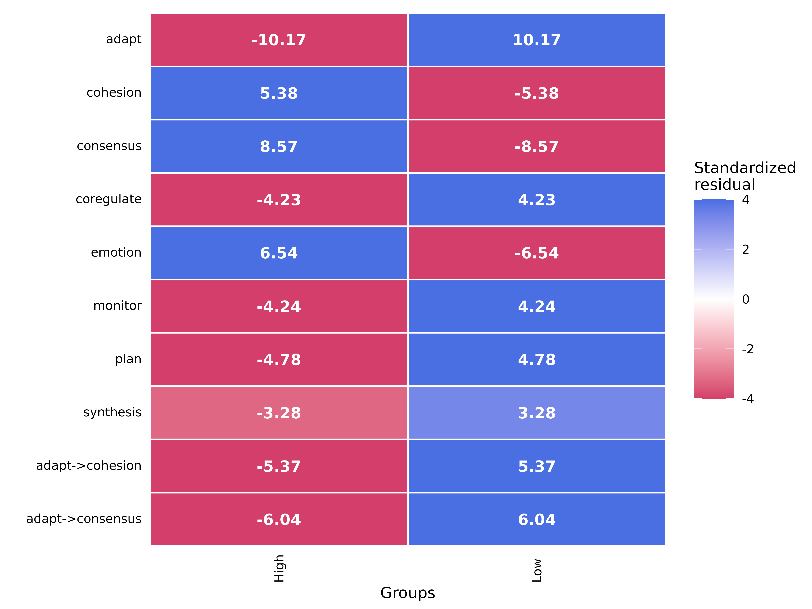
permutation_test()
Permutation tests for edge weight and centrality differences.
permutation_test(x, y, adjust = "none", iter = 1000, paired = FALSE,
level = 0.05, measures = character(0), ...)
model_x <- tna(group_regulation[1:200, ])
model_y <- tna(group_regulation[1001:1200, ])
perm <- permutation_test(model_x, model_y, iter = 100)
print(perm)#> # A tibble: 81 × 4
#> edge_name diff_true effect_size p_value
#> <chr> <dbl> <dbl> <dbl>
#> 1 adapt -> adapt 0 NaN 1
#> 2 cohesion -> adapt 0.00541 0.949 0.802
#> 3 consensus -> adapt -0.000679 -0.175 0.752
#> 4 coregulate -> adapt 0.00769 0.568 0.624
#> 5 discuss -> adapt -0.130 -7.11 0.00990
#> 6 emotion -> adapt 0.0101 1.59 0.257
#> 7 monitor -> adapt -0.00480 -0.367 0.970
#> 8 plan -> adapt 0.00339 1.56 0.0297
#> 9 synthesis -> adapt -0.159 -2.08 0.0594
#> 10 adapt -> cohesion -0.0907 -1.23 0.238
#> # ℹ 71 more rows
plot(perm)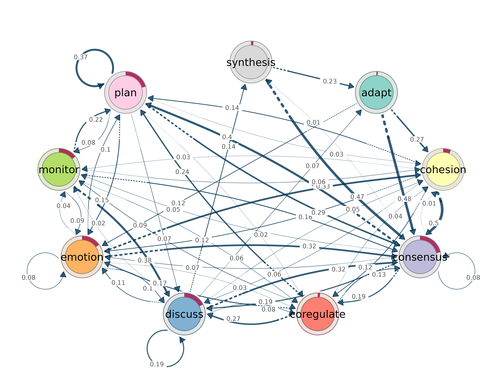
It also accepts a group tna model object.
permg <- permutation_test(gmodel, iter = 100)Validation
bootstrap()
Bootstrap transition networks for confidence intervals and significance.
bootstrap(x, iter = 1000, level = 0.05, method = "stability",
threshold, consistency_range = c(0.75, 1.25))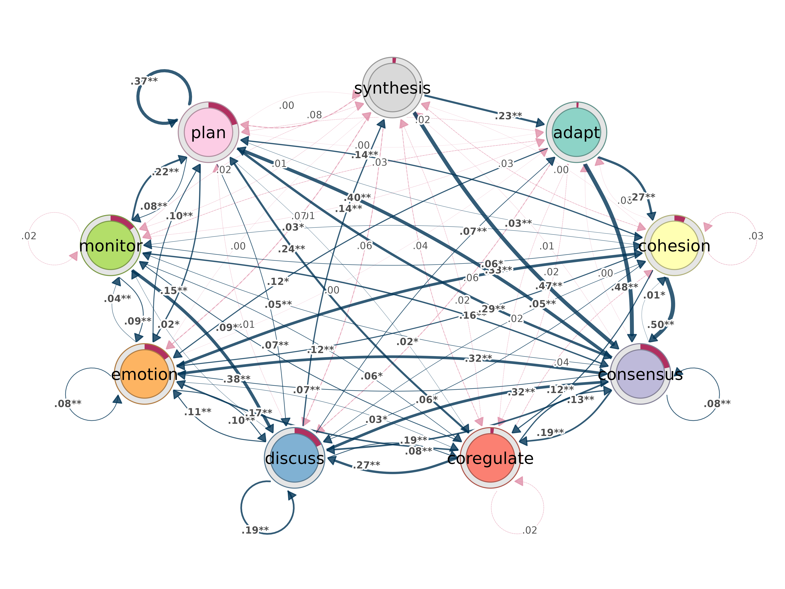
plot_bootstrap_forest(boot)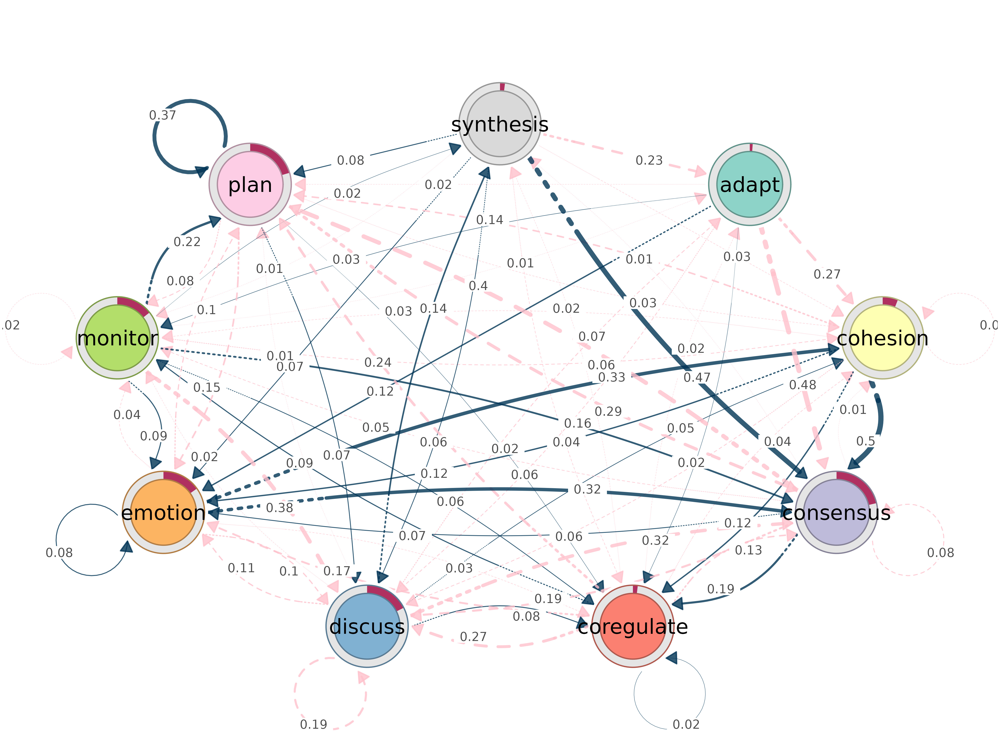
bootstrap_cliques()
Bootstrap cliques to assess stability.
bc <- bootstrap_cliques(model, size = 2, iter = 100)
print(bc)
prune()
Remove weak edges. Four methods available.
prune(x, method = "threshold", threshold = 0.1, lowest = 0.05,
level = 0.5, boot = NULL, ...)
pruned_t <- prune(model, method = "threshold", threshold = 0.1)
pruned_p <- prune(model, method = "lowest", lowest = 0.05)
pruned_d <- prune(model, method = "disparity", level = 0.5)
pruning_details(pruned_t)
plot(pruned_t)
Clustering
cluster_sequences()
Cluster sequences using string distance-based dissimilarity.
cluster_sequences(data, k, dissimilarity = "hamming", method = "pam",
na_syms = c("*", "%"), weighted = FALSE, lambda = 1, ...)
result <- cluster_sequences(group_regulation[1:200, ], k = 3, dissimilarity = "osa")
print(result)#> Clustering method: pam
#> Number of clusters: 3
#> Silhouette score: 0.1678702
#> Cluster sizes:
#> 1 2 3
#> 63 66 71
# Pass directly to group_model
gmodel_clust <- group_model(result)
plot(gmodel_clust)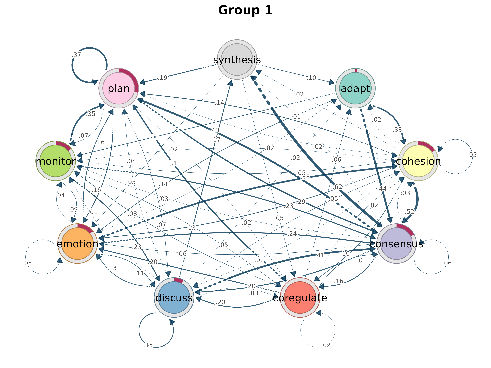
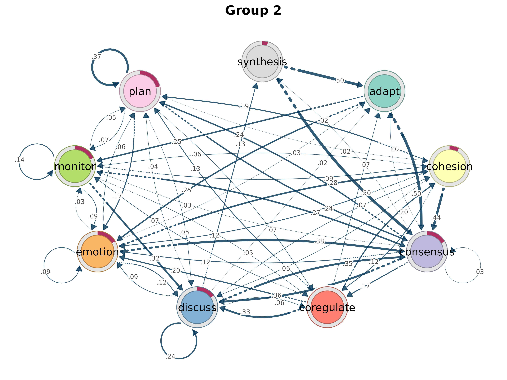
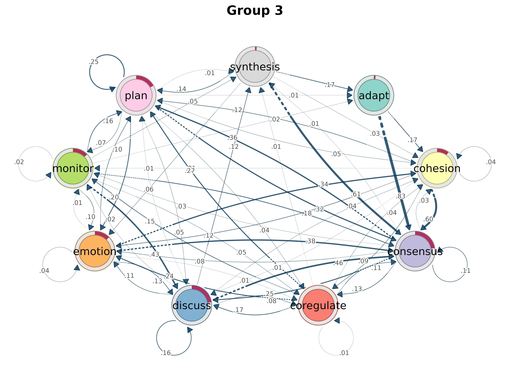
rename_groups()
gmodel_mmm <- group_model(engagement_mmm)
gmodel_mmm_renamed <- rename_groups(gmodel_mmm, c("A", "B", "C"))
cat("Original:", names(group_model(engagement_mmm)), "\n")#> Original: Cluster 1 Cluster 2 Cluster 3#> Renamed: A B C
mmm_stats()
mmm_stats(engagement_mmm)#> cluster variable estimate std_error ci_lower ci_upper z_value
#> 1 Cluster 2 (Intercept) -2.640329 0.1274911 -2.890207 -2.390451 -20.70991
#> 2 Cluster 3 (Intercept) -4.512131 0.3157501 -5.130990 -3.893272 -14.29020
#> p_value
#> 1 0
#> 2 0Summary & Conversion
summary()
summary(model)#> # A tibble: 13 × 2
#> metric value
#> * <chr> <dbl>
#> 1 Node Count 9 e+ 0
#> 2 Edge Count 7.8 e+ 1
#> 3 Network Density 1 e+ 0
#> 4 Mean Distance 4.72e- 2
#> 5 Mean Out-Strength 1 e+ 0
#> 6 SD Out-Strength 8.07e- 1
#> 7 Mean In-Strength 1 e+ 0
#> 8 SD In-Strength 6.80e-17
#> 9 Mean Out-Degree 8.67e+ 0
#> 10 SD Out-Degree 7.07e- 1
#> 11 Centralization (Out-Degree) 1.56e- 2
#> 12 Centralization (In-Degree) 1.56e- 2
#> 13 Reciprocity 9.86e- 1
summary(gmodel)#> # A tibble: 13 × 3
#> metric High Low
#> * <chr> <dbl> <dbl>
#> 1 Node Count 9 e+ 0 9 e+ 0
#> 2 Edge Count 7.6 e+ 1 7.5 e+ 1
#> 3 Network Density 1 e+ 0 1 e+ 0
#> 4 Mean Distance 4.23e- 2 5.60e- 2
#> 5 Mean Out-Strength 1 e+ 0 1 e+ 0
#> 6 SD Out-Strength 9.14e- 1 7.19e- 1
#> 7 Mean In-Strength 1 e+ 0 1 e+ 0
#> 8 SD In-Strength 7.85e-17 3.93e-17
#> 9 Mean Out-Degree 8.44e+ 0 8.33e+ 0
#> 10 SD Out-Degree 1.13e+ 0 8.66e- 1
#> 11 Centralization (Out-Degree) 4.69e- 2 6.25e- 2
#> 12 Centralization (In-Degree) 4.69e- 2 6.25e- 2
#> 13 Reciprocity 9.57e- 1 9.41e- 1
as.igraph()
#> IGRAPH d2938bc DNW- 9 78 --
#> + attr: name (v/c), weight (e/n)
#> + edges from d2938bc (vertex names):
#> [1] adapt ->cohesion adapt ->consensus adapt ->coregulate
#> [4] adapt ->discuss adapt ->emotion adapt ->monitor
#> [7] adapt ->plan cohesion ->adapt cohesion ->cohesion
#> [10] cohesion ->consensus cohesion ->coregulate cohesion ->discuss
#> [13] cohesion ->emotion cohesion ->monitor cohesion ->plan
#> [16] cohesion ->synthesis consensus ->adapt consensus ->cohesion
#> [19] consensus ->consensus consensus ->coregulate consensus ->discuss
#> [22] consensus ->emotion consensus ->monitor consensus ->plan
#> + ... omitted several edgestna v1.1.0 | MIT License | Mohammed Saqr, Santtu Tikka, Sonsoles Lopez-Pernas
Reference: Saqr M., Lopez-Pernas S., et al. (2025). Transition Network Analysis. Proc. LAK ’25, 351-361. doi:10.1145/3706468.3706513